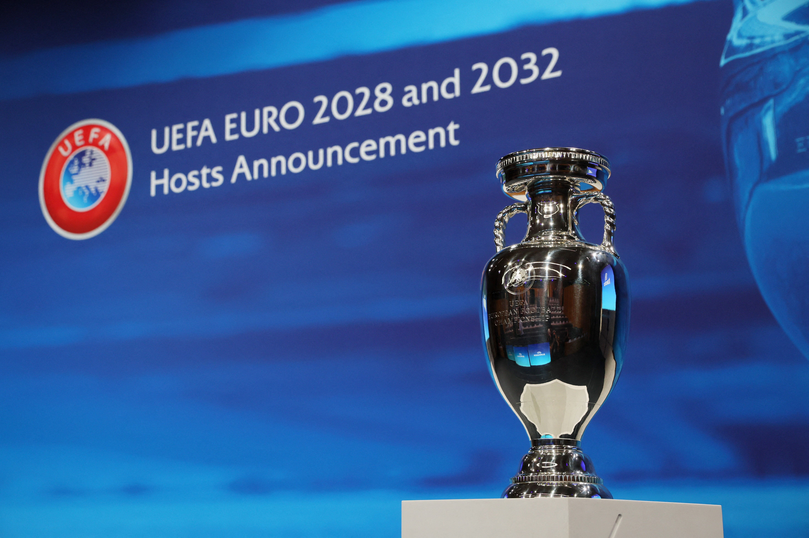
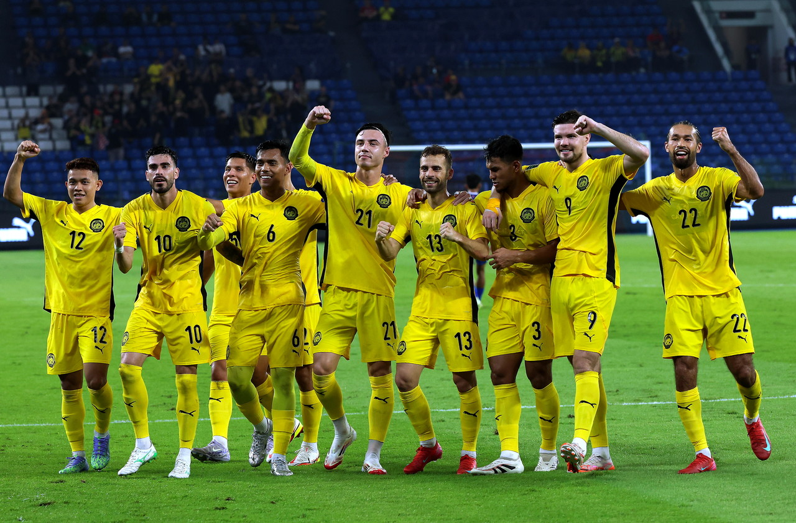

This site includes all the latest blog of many topics.
| Topics |
|---|
| Sports | Gaming | Topic from invited speaker | Music |
|---|

Tottenham Hotspur have entered into advanced talks with Roberto De Zerbi,
former Brighton manager now is willing to take charge immediately.
While he is open to the role of head coach,
he preffered to wait until the end of the season.
But Tottenham have begun stepping up efforts to agree to the deal.
Talks are postive and sources indicate they will be heading towards a final agreement.

Uefa will freeze broadly tickets price for the Euro 2028,
It means supporters can buy five tickets for the pirce of a single World Cup parking space.
The Euros will see 40% tickets allocated to the two most afforable "Fans First" catergories.
For Euro 2024 in Germany had the cheapest group stage tickets costing 30 euros and 60 euros.
Uefa aims to keep these below 30 Euros and 60 Euors Respectively.

GET more naturalised players to beat Vietnam?
After everything that's happened, Malaysian football seems to have learned all the wrong lessons.
Has it gone completely off the rails?
The scars from sanctions by FIFA and the Asian Football Confederation should have been enough.
The infamous "Heritage 7" saga dragged the country into the spotlight for all the wrong reasons.
Yet here we are, still flirting with the same shortcut.
Now, rumours swirl on social media that more players could be naturalised.
It's baffling. Malaysian football should steer well clear of that mess.
Instead of fixing the system, the instinct remains to import solutions.
Maybe what Malaysian football really needs isn't more naturalised players but "naturalised" administrators.
A reset from top to bottom at the FA of Malaysia (FAM) might do more good
than another foreign-born striker in Harimau Malaya colours.